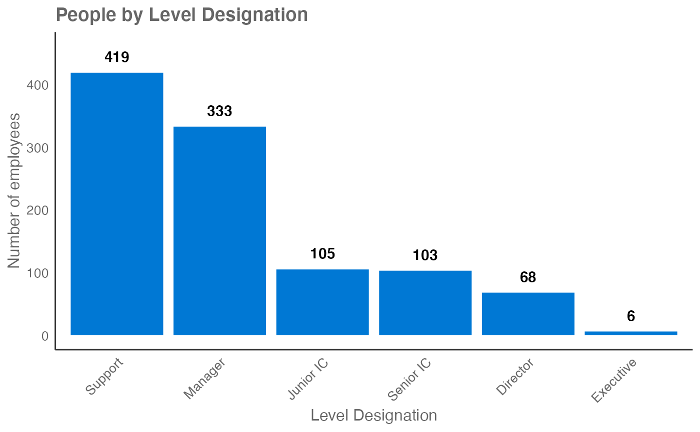

This function enables you to create a count of the distinct people by the specified HR attribute.The default behaviour is to return a bar chart as typically seen in 'Analysis Scope'.
hrvar_count(data, hrvar = "Organization", return = "plot") analysis_scope(data, hrvar = "Organization", return = "plot")
| data | A Standard Person Query dataset in the form of a data frame. |
|---|---|
| hrvar | HR Variable by which to split metrics, defaults to "Organization" but accepts any character vector, e.g. "LevelDesignation". If a vector with more than one value is provided, the HR attributes are automatically concatenated. |
| return | String specifying what to return. This must be one of the following strings:
See |
A different output is returned depending on the value passed to the return
argument:
"plot": ggplot object containing a bar plot.
"table": data frame containing a count table.
Other General:
create_bar_asis(),
create_bar(),
create_boxplot(),
create_bubble(),
create_scatter(),
cut_hour(),
extract_hr(),
identify_outlier()
Other Data Validation:
check_query(),
flag_ch_ratio(),
flag_em_ratio(),
flag_extreme(),
flag_outlooktime(),
hr_trend(),
hrvar_count_all(),
identify_holidayweeks(),
identify_inactiveweeks(),
identify_nkw(),
identify_outlier(),
identify_privacythreshold(),
identify_query(),
identify_tenure(),
remove_outliers(),
subject_validate_report(),
subject_validate(),
track_HR_change()
# Return a bar plot hrvar_count(sq_data, hrvar = "LevelDesignation")# Return a summary table hrvar_count(sq_data, hrvar = "LevelDesignation", return = "table")#> # A tibble: 6 x 2 #> LevelDesignation n #> <chr> <int> #> 1 Support 419 #> 2 Manager 333 #> 3 Junior IC 105 #> 4 Senior IC 103 #> 5 Director 68 #> 6 Executive 6